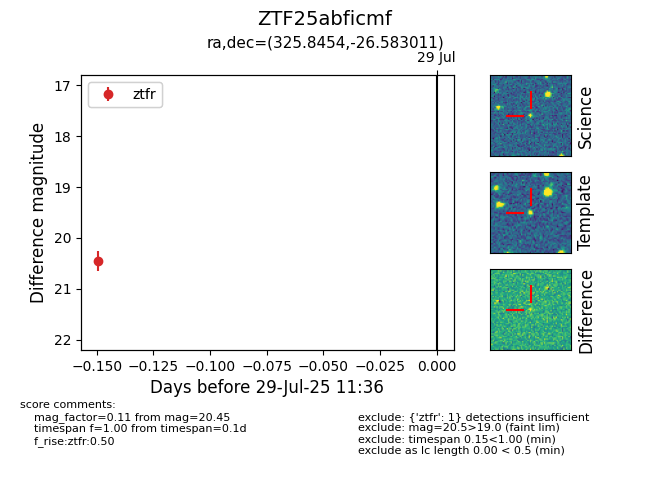

Target ZTF25abficmf at 2025-07-29 11:36, see:
FINK: fink-portal.org/ZTF25abficmf
Lasair: lasair-ztf.lsst.ac.uk/objects/ZTF25abficmf
ALeRCE: alerce.online/object/ZTF25abficmf
alt names
ZTF25abficmf (ztf,fink)
coordinates:
equatorial (ra, dec) = (325.8454,-26.58301)
galactic (l, b) = (22.5179,-48.30646)
photometry
last ztfr=20.45
1 ztfr detections
